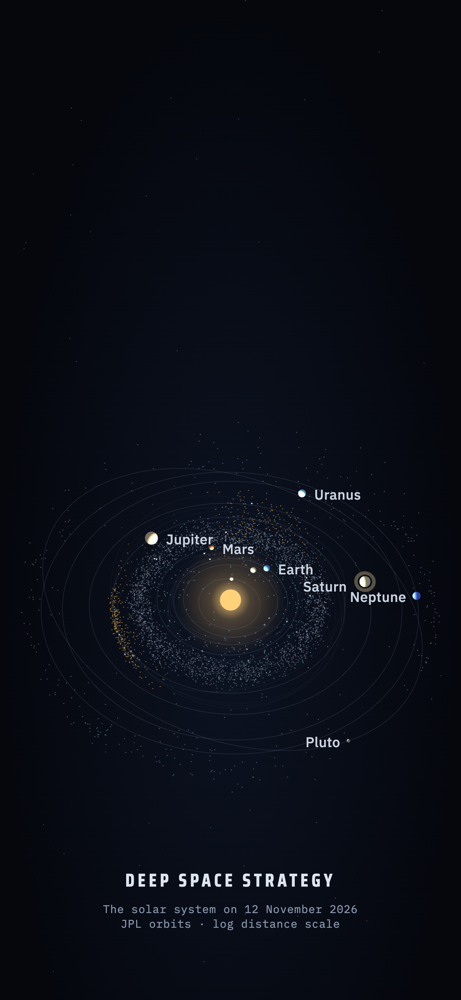
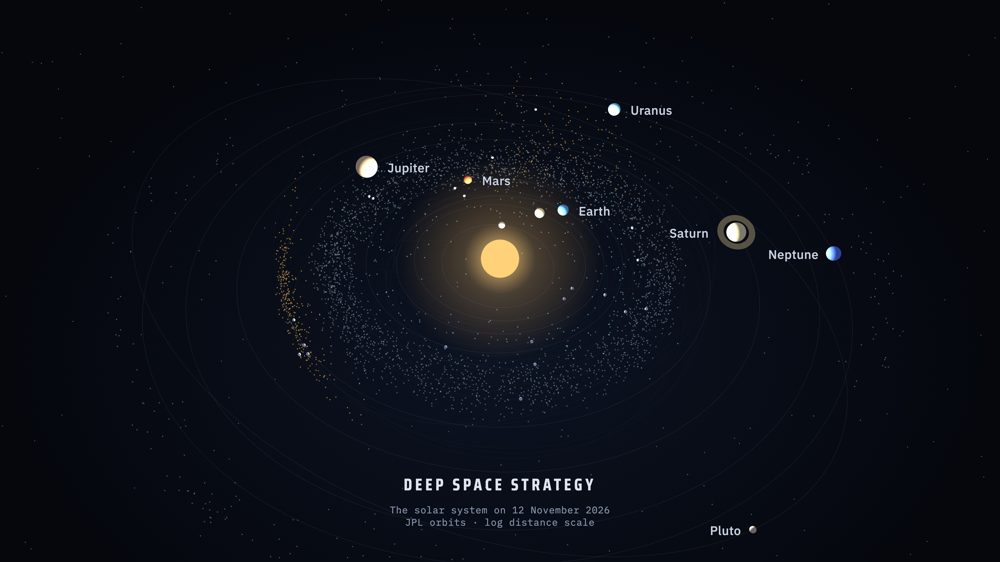

Wallpaper
Every morning this page gets a new picture of the solar system: the planets, Pluto and about 1,400 asteroids and Kuiper belt objects where they stand that day, computed from JPL orbits. The phone version leaves the top third dark for the lock-screen clock.




Set it every morning
- In the Shortcuts app, make a shortcut with two actions: Get Contents of URL with one of the addresses above, then Set Wallpaper (on iPhone choose Lock Screen, on Mac the desktop).
- Under Automation, add a daily automation, for example at 06:00, that runs the shortcut.
The picture changes once a day, shortly before 06:00 in Central Europe. Distances follow a logarithmic scale so that Mercury and Neptune fit in one frame. The picture draws the planets far larger than true scale, and the background stars serve as decoration.
Orbits from JPL (planet elements valid 1800–2050, small-body elements from the JPL Small-Body Database). The same orbits drive the figure on the home page and the solmaps route engine.